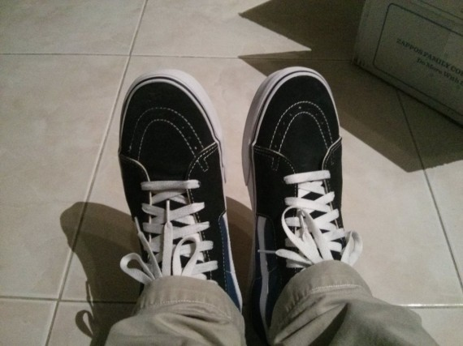

Vans SK8-Hi Core Classics
05 December 2013

I ordered a pair of shoes last week that was slated to arrive Monday. They never showed up. So I checked the UPS tracking info to see what the heck happened. It just said, "The package was missed at the UPS facility, UPS will deliver on the next business day". Thinking that they'd just deliver the thing tomorrow (like it said in the message), I just put it off as some UPS nonsense and decided to wait for it to arrive on Tuesday.
Tuesday comes, doesn't show up. Wednesday, doesn't show up. Each day the UPS tracking info page updates at 10:00 pm saying the same exact message: "The package was missed at the UPS facility, UPS will deliver on the next business day." Surely, something must have gone wrong. I give Zappos a call and they say to just wait it out and if it doesn't arrive, just give them another call.
So I wait another day and guess what.. the shoes still haven't arrived. I call up Zappos again, explain my situation, and the guy says they'll just send another pair free of charge (btw, great customer support). The very second I get off the phone, some guy comes to the door and rings the bell. It's the UPS guy. With my shoes. That I ordered last week.
I end up calling Zappos for the third time to explain my matter of great coincidental timing and tell them to cancel that order they made just two minutes prior.
So that's my exciting ordering shoes online story.